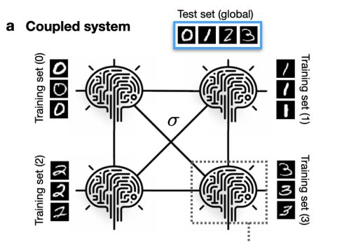
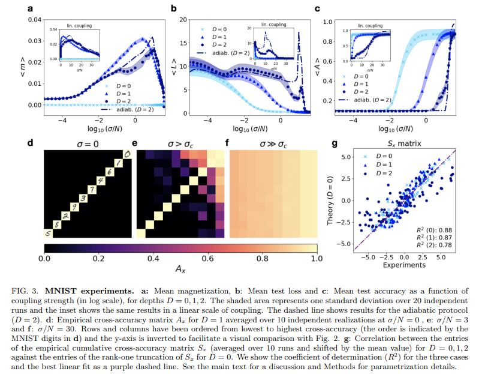
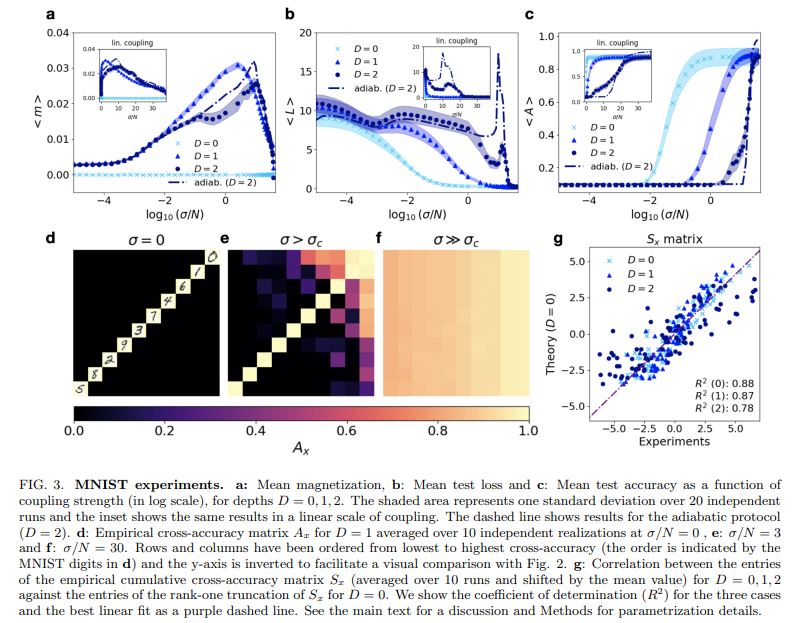
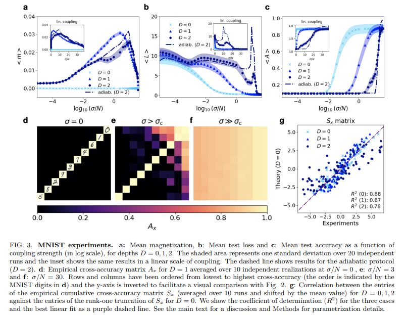
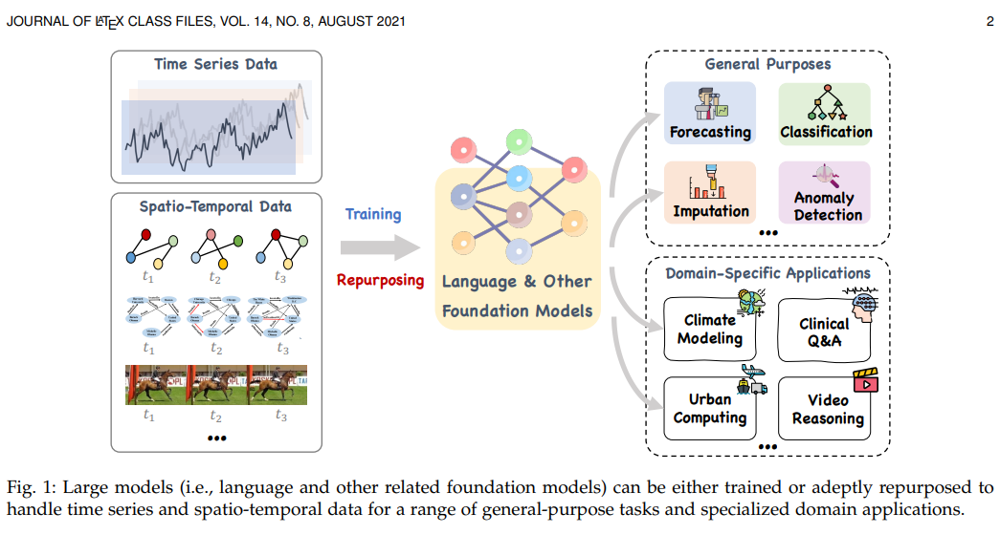
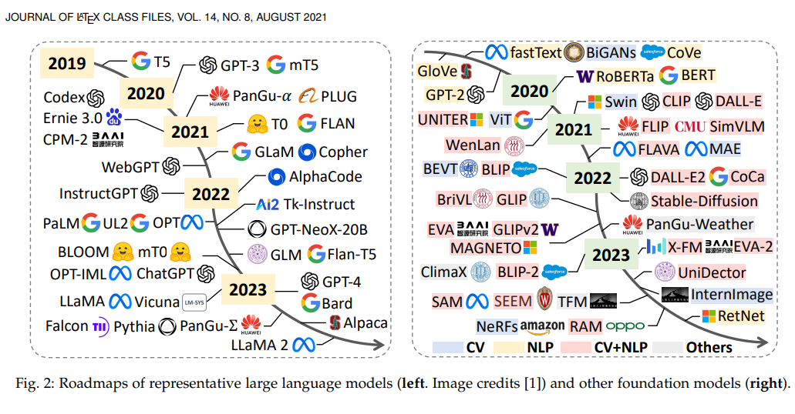
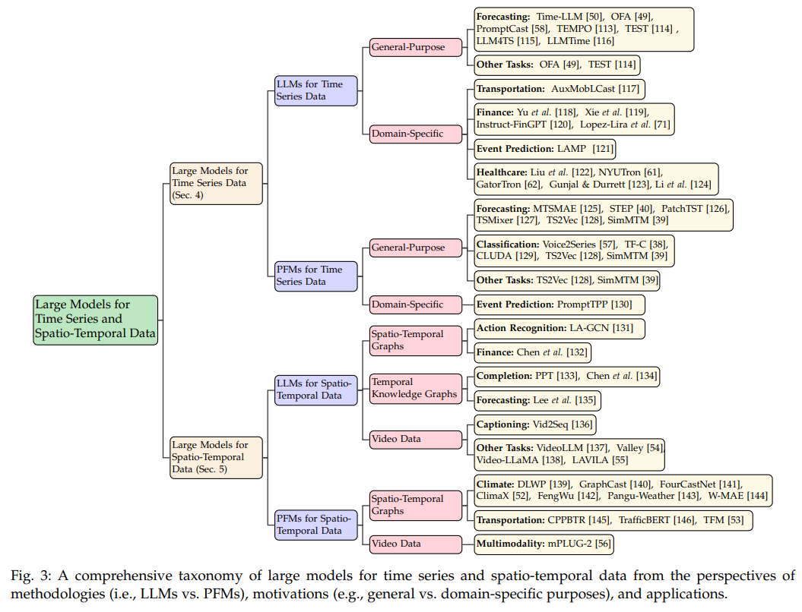
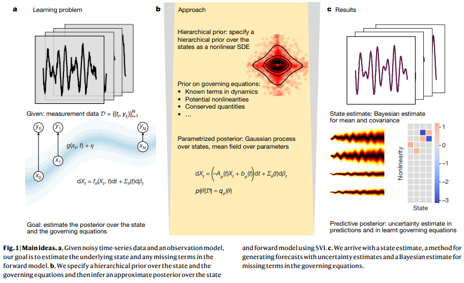
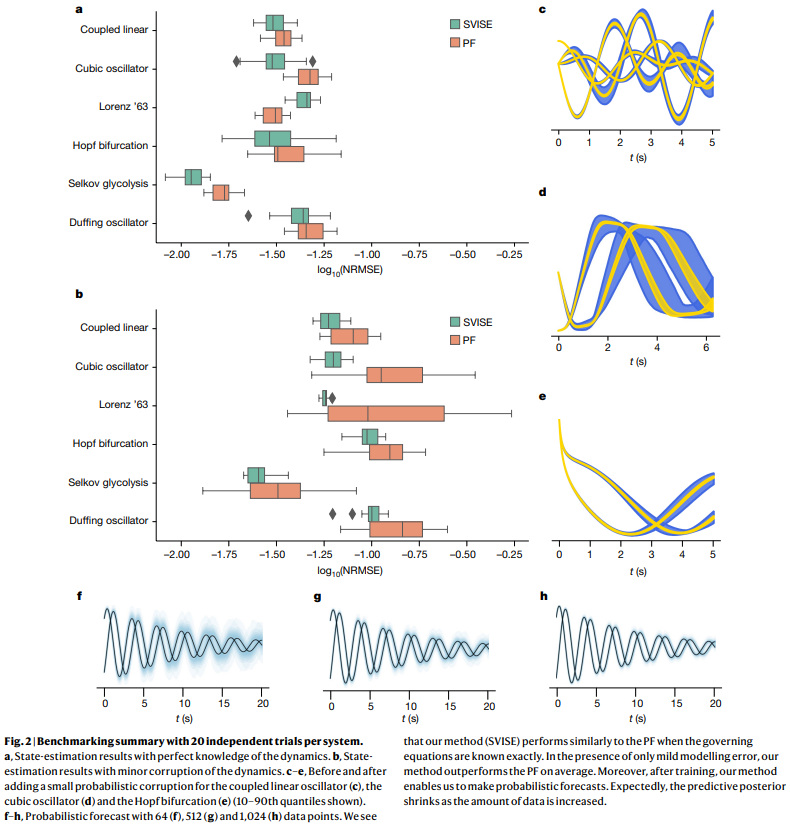
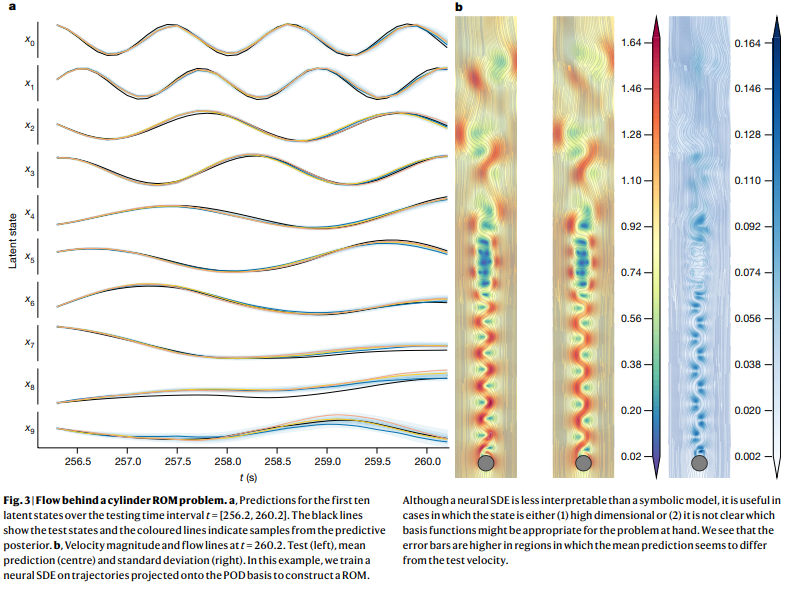

10月に掲載された論文やプレプリントをいくつかピックアップして紹介していきます。説明を多めにしています。定期的に更新したいと思います。
論文タイトル一覧
結合ニューラルネットワークにおける集合的学習
結合ニューラルネットワークの集合的学習を記述する最小限の数理モデルを提案した。モデルの挙動を解析するために、深層線形ネットワークに対する有効理論を導出し、その形式が変形されたギンズブルグ・ランダウモデルに相当することを示した。有効理論から、ニューラルネットワークのパラメータにおける乱雑性-秩序性-乱雑性の相転移と、それに伴う集合的学習の発現と遅延を予測した。MNISTデータセットを用いて非線形ネットワークの実験を行い、有効理論の予測と一致する結果を得た。ニューラルネットワーク間でどのような順序で学習が進むかを示すマイクロスコピックな学習経路を導出し、実験データとの相関を確認した。
2023-10-16
An effective theory of collective deep learning
Ming Jin, et al. (Monash University, Australia)
https://arxiv.org/abs/2310.12802
An effective theory of collective deep learning
Ming Jin, et al. (Monash University, Australia)
https://arxiv.org/abs/2310.12802

 


【コメント】マルチモーダルな情報空間に接続して、高次元かつ複雑な現象から知を抽出するには、やはりデータ駆動の大規模モデルが必要なんだと思う。断片的に見て、低次元に落とし込む手法は分かり易い一方で、あらゆる多くの誤解を招きうるのだろうかと改めて考える。時系列データはその系の空間平均で出力されるため、局所的な現象でなく大局的な現象を対象とするケースが多い。
【用語】集合的学習：個々のニューラルネットワークが自分の持つ限られたデータだけでなく、他のニューラルネットワークと相互作用しながら学習することで、より広範なデータに対して予測や分類ができるようになる現象。集合的学習は自然界や社会システムにも見られる一般的な複雑系現象である。本研究では、結合ニューラルネットワークにおける集合的学習を物理学的な観点から理解しようと試みた。ギンズブルグ・ランダウモデル：凝縮系物理学で相転移や臨界現象を記述するために用いられる統計力学的な模型。ランダウの自由エネルギー展開に基づいて、秩序変数（本研究ではニューラルネットワークのパラメータ）の挙動を支配する微分方程式を導く。ギンズブルグは不純物や揺らぎなどの乱雑性が相転移に与える影響を考慮した[43]。本研究では、深層ニューラルネットワークに対する有効理論がギンズブルグ・ランダウモデルの変形に相当することを示し、その相転移の性質を解析した。有効理論：物理学で、より基本的な理論から導かれる近似的な理論のこと。有効理論は、興味のある現象のスケールに応じて、必要な物理量やパラメータを選択し、無関係なものは無視することで、問題を簡略化する。有効理論は、基本的な理論が未知である場合や、計算が困難である場合にも有用である。本研究では、深層線形ネットワークに対する有効理論を導出し、その形式が変形されたギンズブルグ・ランダウモデルに相当することを示した。
【提案手法】結合ニューラルネットワークの集合的学習を記述する最小限の数理モデルを提案した。このモデルでは、N個のニューラルネットワークがそれぞれ異なるデータセットで学習しながら、パラメータレベルで拡散的に結合していると仮定した。結合強度はσで表される。各ニューラルネットワークはD層のフィードフォワード型であり、損失関数は平均二乗誤差とL2正則化項からなるとした。モデルの挙動を解析するために、深層線形ネットワークに対する有効理論を導出した。このために、各ニューラルネットワークのパラメータを平均化してスカラー値の秩序変数miとみなし、学習率が十分小さいとして連続化した方程式を得た。その結果、以下のような微分方程式が導かれた。 m˙ i = δimD i − m2D+15 i − γmˆ i +6 σˆ123 N X N j=1 qij (mj − mi), (4)78 ここでδiはi番目のニューラルネットワークに割り当てられたデータセットの入力と出力の相関係数であり、γは正則化項の強さである。qijはニューラルネットワーク間の結合行列である。有効理論から、ニューラルネットワークのパラメータにおける乱雑性-秩序性-乱雑性の相転移と、それに伴う集合的学習の発現と遅延を予測した。このために、方程式(4)の定常解を求めて秩序変数miの分布を調べた。その結果、結合強度σが小さいときは乱雑性相（|⟨m⟩| ≈ 0）、中程度のときは秩序性相（|⟨m⟩| > 0）、大きいときは再び乱雑性相（|⟨m⟩| ≈ 0）になることがわかった。ニューラルネットワークの深さDが集合的学習に与える影響を理解するために、方程式(4)の非線形性と方程式(5)の高次モーメントの相互作用を考慮した。その結果、深さが大きくなると、方程式(4)の効果的なポテンシャルに多数の局所的な極小値が現れ、方程式(5)の損失関数が非単調に減少することがわかった。これは、深層ニューラルネットワークでは、パラメータの分布が多様で安定であることを意味する。また、初期条件や結合強度の変化に対する感受性が高まり、多安定性やヒステリシス現象が発生することも示した。これらの現象は、深層ニューラルネットワークにおける集合的学習の複雑さと豊かさを反映している。
【学術的新規性】結合ニューラルネットワークの集合的学習を記述する最小限の数理モデルを提案し、その挙動を解析するために深層線形ネットワークに対する有効理論を導出した。この有効理論は、変形されたギンズブルグ・ランダウモデルに相当することを示し、ニューラルネットワークのパラメータにおける乱雑性-秩序性-乱雑性の相転移と、それに伴う集合的学習の発現と遅延を予測した。MNISTデータセットを用いて非線形ネットワークの実験を行い、有効理論の予測と一致する結果を得た。特に、個々のニューラルネットワークが自分の持つ限られたデータだけでなく、他のニューラルネットワークと相互作用しながら学習することで、未知のデータクラスに対しても予測や分類ができるようになることを示した。ニューラルネットワーク間でどのような順序で学習が進むかを示すマイクロスコピックな学習経路を導出し、実験データとの相関を確認した。この学習経路は、ニューラルネットワークに割り当てられたデータセットの入力と出力の相関係数に依存することを示し、集合的学習のメカニズムを解明した。この研究は、自然界や社会システムにも見られる集合的学習という一般的な複雑系現象を物理学的な観点から理解しようと試みたものであり、機械学習や神経科学などの分野に貢献する可能性がある。
【用語】集合的学習：個々のニューラルネットワークが自分の持つ限られたデータだけでなく、他のニューラルネットワークと相互作用しながら学習することで、より広範なデータに対して予測や分類ができるようになる現象。集合的学習は自然界や社会システムにも見られる一般的な複雑系現象である。本研究では、結合ニューラルネットワークにおける集合的学習を物理学的な観点から理解しようと試みた。ギンズブルグ・ランダウモデル：凝縮系物理学で相転移や臨界現象を記述するために用いられる統計力学的な模型。ランダウの自由エネルギー展開に基づいて、秩序変数（本研究ではニューラルネットワークのパラメータ）の挙動を支配する微分方程式を導く。ギンズブルグは不純物や揺らぎなどの乱雑性が相転移に与える影響を考慮した[43]。本研究では、深層ニューラルネットワークに対する有効理論がギンズブルグ・ランダウモデルの変形に相当することを示し、その相転移の性質を解析した。有効理論：物理学で、より基本的な理論から導かれる近似的な理論のこと。有効理論は、興味のある現象のスケールに応じて、必要な物理量やパラメータを選択し、無関係なものは無視することで、問題を簡略化する。有効理論は、基本的な理論が未知である場合や、計算が困難である場合にも有用である。本研究では、深層線形ネットワークに対する有効理論を導出し、その形式が変形されたギンズブルグ・ランダウモデルに相当することを示した。
【提案手法】結合ニューラルネットワークの集合的学習を記述する最小限の数理モデルを提案した。このモデルでは、N個のニューラルネットワークがそれぞれ異なるデータセットで学習しながら、パラメータレベルで拡散的に結合していると仮定した。結合強度はσで表される。各ニューラルネットワークはD層のフィードフォワード型であり、損失関数は平均二乗誤差とL2正則化項からなるとした。モデルの挙動を解析するために、深層線形ネットワークに対する有効理論を導出した。このために、各ニューラルネットワークのパラメータを平均化してスカラー値の秩序変数miとみなし、学習率が十分小さいとして連続化した方程式を得た。その結果、以下のような微分方程式が導かれた。 m˙ i = δimD i − m2D+15 i − γmˆ i +6 σˆ123 N X N j=1 qij (mj − mi), (4)78 ここでδiはi番目のニューラルネットワークに割り当てられたデータセットの入力と出力の相関係数であり、γは正則化項の強さである。qijはニューラルネットワーク間の結合行列である。有効理論から、ニューラルネットワークのパラメータにおける乱雑性-秩序性-乱雑性の相転移と、それに伴う集合的学習の発現と遅延を予測した。このために、方程式(4)の定常解を求めて秩序変数miの分布を調べた。その結果、結合強度σが小さいときは乱雑性相（|⟨m⟩| ≈ 0）、中程度のときは秩序性相（|⟨m⟩| > 0）、大きいときは再び乱雑性相（|⟨m⟩| ≈ 0）になることがわかった。ニューラルネットワークの深さDが集合的学習に与える影響を理解するために、方程式(4)の非線形性と方程式(5)の高次モーメントの相互作用を考慮した。その結果、深さが大きくなると、方程式(4)の効果的なポテンシャルに多数の局所的な極小値が現れ、方程式(5)の損失関数が非単調に減少することがわかった。これは、深層ニューラルネットワークでは、パラメータの分布が多様で安定であることを意味する。また、初期条件や結合強度の変化に対する感受性が高まり、多安定性やヒステリシス現象が発生することも示した。これらの現象は、深層ニューラルネットワークにおける集合的学習の複雑さと豊かさを反映している。
【学術的新規性】結合ニューラルネットワークの集合的学習を記述する最小限の数理モデルを提案し、その挙動を解析するために深層線形ネットワークに対する有効理論を導出した。この有効理論は、変形されたギンズブルグ・ランダウモデルに相当することを示し、ニューラルネットワークのパラメータにおける乱雑性-秩序性-乱雑性の相転移と、それに伴う集合的学習の発現と遅延を予測した。MNISTデータセットを用いて非線形ネットワークの実験を行い、有効理論の予測と一致する結果を得た。特に、個々のニューラルネットワークが自分の持つ限られたデータだけでなく、他のニューラルネットワークと相互作用しながら学習することで、未知のデータクラスに対しても予測や分類ができるようになることを示した。ニューラルネットワーク間でどのような順序で学習が進むかを示すマイクロスコピックな学習経路を導出し、実験データとの相関を確認した。この学習経路は、ニューラルネットワークに割り当てられたデータセットの入力と出力の相関係数に依存することを示し、集合的学習のメカニズムを解明した。この研究は、自然界や社会システムにも見られる集合的学習という一般的な複雑系現象を物理学的な観点から理解しようと試みたものであり、機械学習や神経科学などの分野に貢献する可能性がある。
時系列と時空間データのための大規模モデル
時系列と時空間データ分析における大規模モデル（言語モデルや基盤モデルなど）の最新の進歩を包括的かつ詳細にレビューした。データタイプ、モデルタイプ、スコープ、応用領域やタスクなどの複数の観点から、統一的で構造化された分類体系を提案した。データセット、オープンソース実装、評価ベンチマークなどの豊富なリソースをまとめて紹介し、実用的な応用例も示した。データソース、モデルアーキテクチャ、学習や推論のパラダイムなどの観点から、今後の研究の方向性を議論した。
2023-10-16
Large Models for Time Series and Spatio-Temporal Data: A Survey and Outlook
Ming Jin, et al. (Monash University, Australia)
arxiv.org/abs/2310.10196
Large Models for Time Series and Spatio-Temporal Data: A Survey and Outlook
Ming Jin, et al. (Monash University, Australia)
arxiv.org/abs/2310.10196



【コメント】マルチモーダルな情報空間に接続して、高次元かつ複雑な現象から知を抽出するには、やはりデータ駆動の大規模モデルが必要なんだと思う。断片的に見て、低次元に落とし込む手法は分かり易い一方で、あらゆる多くの誤解を招きうるのだろうかと改めて考える。時系列データはその系の空間平均で出力されるため、局所的な現象でなく大局的な現象を対象とするケースが多い。
【用語】大規模言語モデル（LLM）：自然言語処理（NLP）のタスクにおいて、大規模なテキストコーパスから意味や知識の表現を学習し、様々なタスクに対応できる能力を持つモデル。例えば、GPT-3 [10] やPaLM [12] などがある。最近では、画像や音声など他のモダリティと統合した多モダリティ言語モデル（MLLM）も発展している。前学習基盤モデル（PFM）：様々な下流タスクに適応できるように前学習された大規模なモデル。LLMはPFMの一種だが、PFMはより広いカテゴリであり、画像や音声など他のモダリティにも対応できる。PFMは、モダリティ間の架け橋、推論や計画、インタラクションなどの能力を持つ。例えば、CLIPやSAMなどがある。時空間グラフ（STG）：時間順に並べられた静的グラフのスナップショットから構成されるグラフ。各スナップショットは、時刻tにおけるノード集合Vtとエッジ集合Etからなり、隣接行列Atとノード特徴行列Xtで表される。STGは交通流量やオンデマンドサービスなどの時空間現象をモデル化するのに有用である。
【提案手法】時系列と時空間データ分析における大規模モデルの手法論は、主にLLMとPFMの二つに分けられる。LLMは、自然言語処理のタスクにおいて高い性能を発揮するモデルであり、時系列や時空間データにも適用できる可能性がある。しかし、そのままでは異なるモダリティのデータを処理できないため、多モダリティ再利用やAPIベースのプロンプティングなどの方法が必要である。多モダリティ再利用とは、LLMを微調整したり、再プログラミングしたりして、時系列や時空間データを自然言語と統合する方法である。APIベースのプロンプティングとは、時系列や時空間データを自然言語のプロンプトにラップして、LLMに生成的な推論をさせる方法である。PFMは、様々な下流タスクに適応できるように前学習された大規模なモデルであり、画像や音声など他のモダリティにも対応できる。PFMは、自己教師付き学習や転移学習などの技術を用いて、大規模な時系列や時空間データから意味や知識の表現を学習する。PFMは、時系列や時空間データ分析における一般的なタスクだけでなく、特定のドメインや応用領域にも適用できる。例えば、気候モデリングや交通予測などがある。
【学術的新規性】時系列と時空間データ分析における大規模モデルは、まだ発展途上の分野であり、多くの課題や可能性がある。本研究では、この分野の最新の進歩を包括的かつ詳細にレビューし、統一的で構造化された分類体系を提案した。これにより、既存の研究を多角的に理解し、将来の研究の方向性を示すことができる。特に本研究では、豊富なリソースと実用的な応用例も紹介した。これらは、時系列と時空間データ分析における大規模モデルの開発や評価に役立つだけでなく、様々な領域やタスクにおける大規模モデルの有効性や影響力を示すものでもある。また、データソース、モデルアーキテクチャ、学習や推論のパラダイムなどの観点から、未解決の課題や有望な機会を指摘した。また、大規模モデルが持つ倫理的・社会的・環境的な課題にも言及し、責任あるAIシステムの構築を促した。
【用語】大規模言語モデル（LLM）：自然言語処理（NLP）のタスクにおいて、大規模なテキストコーパスから意味や知識の表現を学習し、様々なタスクに対応できる能力を持つモデル。例えば、GPT-3 [10] やPaLM [12] などがある。最近では、画像や音声など他のモダリティと統合した多モダリティ言語モデル（MLLM）も発展している。前学習基盤モデル（PFM）：様々な下流タスクに適応できるように前学習された大規模なモデル。LLMはPFMの一種だが、PFMはより広いカテゴリであり、画像や音声など他のモダリティにも対応できる。PFMは、モダリティ間の架け橋、推論や計画、インタラクションなどの能力を持つ。例えば、CLIPやSAMなどがある。時空間グラフ（STG）：時間順に並べられた静的グラフのスナップショットから構成されるグラフ。各スナップショットは、時刻tにおけるノード集合Vtとエッジ集合Etからなり、隣接行列Atとノード特徴行列Xtで表される。STGは交通流量やオンデマンドサービスなどの時空間現象をモデル化するのに有用である。
【提案手法】時系列と時空間データ分析における大規模モデルの手法論は、主にLLMとPFMの二つに分けられる。LLMは、自然言語処理のタスクにおいて高い性能を発揮するモデルであり、時系列や時空間データにも適用できる可能性がある。しかし、そのままでは異なるモダリティのデータを処理できないため、多モダリティ再利用やAPIベースのプロンプティングなどの方法が必要である。多モダリティ再利用とは、LLMを微調整したり、再プログラミングしたりして、時系列や時空間データを自然言語と統合する方法である。APIベースのプロンプティングとは、時系列や時空間データを自然言語のプロンプトにラップして、LLMに生成的な推論をさせる方法である。PFMは、様々な下流タスクに適応できるように前学習された大規模なモデルであり、画像や音声など他のモダリティにも対応できる。PFMは、自己教師付き学習や転移学習などの技術を用いて、大規模な時系列や時空間データから意味や知識の表現を学習する。PFMは、時系列や時空間データ分析における一般的なタスクだけでなく、特定のドメインや応用領域にも適用できる。例えば、気候モデリングや交通予測などがある。
【学術的新規性】時系列と時空間データ分析における大規模モデルは、まだ発展途上の分野であり、多くの課題や可能性がある。本研究では、この分野の最新の進歩を包括的かつ詳細にレビューし、統一的で構造化された分類体系を提案した。これにより、既存の研究を多角的に理解し、将来の研究の方向性を示すことができる。特に本研究では、豊富なリソースと実用的な応用例も紹介した。これらは、時系列と時空間データ分析における大規模モデルの開発や評価に役立つだけでなく、様々な領域やタスクにおける大規模モデルの有効性や影響力を示すものでもある。また、データソース、モデルアーキテクチャ、学習や推論のパラダイムなどの観点から、未解決の課題や有望な機会を指摘した。また、大規模モデルが持つ倫理的・社会的・環境的な課題にも言及し、責任あるAIシステムの構築を促した。
物理系の未知の支配方程式に対する状態推定
マルコフガウス過程に対する新しい再パラメータ化法を提案し、未知の支配方程式を持つ物理系の状態推定に応用した。従来の状態推定手法が不十分なモデル構造不確実性を扱えないことに対処し、モデルの欠落項や全体を同時に学習できる。ベイズ的な観点から状態推定と支配方程式の発見を行い、予測や不確実性の評価に有用な事後分布を得られる。数値実験で、既知の支配方程式やモデル誤差がある場合において、粒子フィルターと比較して優れた状態推定性能を示した。シンボリックな支配方程式だけでなく、ニューラルネットワークを用いたニューラル確率微分方程式も学習できることを示した。
2023-10-13
State estimation of a physical system with unknown governing equations
Kevin Course et al. (University of Toronto, Toronto, Ontario, Canada)
Nature 622, 261–267 (2023)
State estimation of a physical system with unknown governing equations
Kevin Course et al. (University of Toronto, Toronto, Ontario, Canada)
Nature 622, 261–267 (2023)



【コメント】高次元や複雑な物理系に対応できるシンボリックな支配方程式の導出ができるとのこと。データ駆動型サイエンスが一般化して複雑系が明らかになっていくことにワクワクしますね。
【用語】状態推定：観測データと数理モデルを組み合わせて、物理系の内部状態やパラメータを推測する問題。カルマンフィルターや粒子フィルターなどが代表的な手法である。支配方程式：物理系の挙動を記述する微分方程式。例えば、流体力学ではナビエ-ストークス方程式が支配方程式となる。確率微分方程式：確率過程によって駆動される微分方程式。物理系の不確実性やノイズを取り込むことができる。イトー積分やストラトノビッチ積分などが定義される。
【方法】確率変分推論：近似事後分布をパラメータ化し、エビデンス下界（ELBO）と呼ばれる目的関数を最大化することで、真の事後分布に近づける手法。計算コストが高いMCMC法に代わって広く用いられている。マルコフガウス過程：確率微分方程式の解として定義されるガウス過程。マルコフ性を持ち、任意の時刻での平均と共分散がODEで表される。再パラメータ化法：変分パラメータの勾配計算を容易にするために、確率変数を決定論的な変数と確率的なノイズの関数として表す方法。ニューラルネットワークの学習に応用されている。この問題で使用しているベンチマーク問題は、以下の6つです。
・連成線形振動子: 2つの質点がバネで結ばれた系で、外力や摩擦力が働く。
・立方振動子: 非線形な復元力を持つ単振動子で、カオス的な挙動を示す。
・ローレンツ63: 大気対流のモデルで、3次元の非線形微分方程式で表される。
・ホップ分岐: 2次元の非線形微分方程式で、パラメータによって周期解や不安定解が現れる。
・セルコフ糖代謝: 細胞内の酵素反応を表す2次元の非線形微分方程式で、振動解や複雑なダイナミクスを示す。
・ダフィング振動子: 非線形な復元力と非線形な減衰力を持つ単振動子で、周期倍分岐やカオス的な挙動を示す。
これらのベンチマーク問題に対して、我々は提案した方法（SVISE）と既存の方法（PF）とを比較しています。SVISEは、観測データから状態推定と支配方程式の発見を同時に行うことができる方法です。PFは、支配方程式が既知である場合に用いられるベイズ的な状態推定法です。
実際のコードはこちらの Github に記載があります。
【新規性】本研究は、マルコフガウス過程に対する再パラメータ化法を初めて提案し、未知の支配方程式を持つ物理系の状態推定に応用した点が新規である。また、モデル構造不確実性を扱える状態推定手法を開発し、モデルの欠落項や全体を同時に学習できる点が先行研究と異なる。さらに、シンボリックな支配方程式だけでなく、ニューラル確率微分方程式も学習できることを示し、高次元や複雑な物理系に対応できる点が優れている。
【成果の具体例】状態推定と方程式発見の問題: 物理システムのノイズの多い観測値とその振る舞いを予測する数学モデルを統合することで、測定できない状態や測定値をノイズ除去することを目的としています。従来の状態推定技術は、数学モデルの不確実性が加法的な確率的摂動やパラメトリックなものであるという強い仮定に基づいています。しかし、現実の数学モデルには、構造的な不確実性が含まれることが多く、それを考慮しないと状態推定にバイアスが生じます。確率的変分推論の手法: 未知の方程式を含む状態推定の問題に対処するために、マルコフガウス過程に対する再パラメータ化トリックを導入しました。これにより、近似ベイズ推論を行うことができます。状態と方程式のパラメータに対する事前分布と近似事後分布を定義し、エビデンス下界（ELBO）を最大化することで、同時に状態推定と方程式発見を行います。数値実験の結果: いくつかのベンチマーク問題において、提案した手法の性能を評価しました。既知の方程式を用いた場合や、方程式に小さな誤差がある場合には、パーティクルフィルターと同等かそれ以上の精度で状態推定ができました。また、方程式が部分的にもしくは完全に未知である場合には、観測値から方程式の欠けている項や全体を発見することができました。さらに、高次元な状態やニューラルネットワークで表現された方程式に対しても、提案した手法を適用することができました。
【用語】状態推定：観測データと数理モデルを組み合わせて、物理系の内部状態やパラメータを推測する問題。カルマンフィルターや粒子フィルターなどが代表的な手法である。支配方程式：物理系の挙動を記述する微分方程式。例えば、流体力学ではナビエ-ストークス方程式が支配方程式となる。確率微分方程式：確率過程によって駆動される微分方程式。物理系の不確実性やノイズを取り込むことができる。イトー積分やストラトノビッチ積分などが定義される。
【方法】確率変分推論：近似事後分布をパラメータ化し、エビデンス下界（ELBO）と呼ばれる目的関数を最大化することで、真の事後分布に近づける手法。計算コストが高いMCMC法に代わって広く用いられている。マルコフガウス過程：確率微分方程式の解として定義されるガウス過程。マルコフ性を持ち、任意の時刻での平均と共分散がODEで表される。再パラメータ化法：変分パラメータの勾配計算を容易にするために、確率変数を決定論的な変数と確率的なノイズの関数として表す方法。ニューラルネットワークの学習に応用されている。この問題で使用しているベンチマーク問題は、以下の6つです。
・連成線形振動子: 2つの質点がバネで結ばれた系で、外力や摩擦力が働く。
・立方振動子: 非線形な復元力を持つ単振動子で、カオス的な挙動を示す。
・ローレンツ63: 大気対流のモデルで、3次元の非線形微分方程式で表される。
・ホップ分岐: 2次元の非線形微分方程式で、パラメータによって周期解や不安定解が現れる。
・セルコフ糖代謝: 細胞内の酵素反応を表す2次元の非線形微分方程式で、振動解や複雑なダイナミクスを示す。
・ダフィング振動子: 非線形な復元力と非線形な減衰力を持つ単振動子で、周期倍分岐やカオス的な挙動を示す。
これらのベンチマーク問題に対して、我々は提案した方法（SVISE）と既存の方法（PF）とを比較しています。SVISEは、観測データから状態推定と支配方程式の発見を同時に行うことができる方法です。PFは、支配方程式が既知である場合に用いられるベイズ的な状態推定法です。
実際のコードはこちらの Github に記載があります。
【新規性】本研究は、マルコフガウス過程に対する再パラメータ化法を初めて提案し、未知の支配方程式を持つ物理系の状態推定に応用した点が新規である。また、モデル構造不確実性を扱える状態推定手法を開発し、モデルの欠落項や全体を同時に学習できる点が先行研究と異なる。さらに、シンボリックな支配方程式だけでなく、ニューラル確率微分方程式も学習できることを示し、高次元や複雑な物理系に対応できる点が優れている。
【成果の具体例】状態推定と方程式発見の問題: 物理システムのノイズの多い観測値とその振る舞いを予測する数学モデルを統合することで、測定できない状態や測定値をノイズ除去することを目的としています。従来の状態推定技術は、数学モデルの不確実性が加法的な確率的摂動やパラメトリックなものであるという強い仮定に基づいています。しかし、現実の数学モデルには、構造的な不確実性が含まれることが多く、それを考慮しないと状態推定にバイアスが生じます。確率的変分推論の手法: 未知の方程式を含む状態推定の問題に対処するために、マルコフガウス過程に対する再パラメータ化トリックを導入しました。これにより、近似ベイズ推論を行うことができます。状態と方程式のパラメータに対する事前分布と近似事後分布を定義し、エビデンス下界（ELBO）を最大化することで、同時に状態推定と方程式発見を行います。数値実験の結果: いくつかのベンチマーク問題において、提案した手法の性能を評価しました。既知の方程式を用いた場合や、方程式に小さな誤差がある場合には、パーティクルフィルターと同等かそれ以上の精度で状態推定ができました。また、方程式が部分的にもしくは完全に未知である場合には、観測値から方程式の欠けている項や全体を発見することができました。さらに、高次元な状態やニューラルネットワークで表現された方程式に対しても、提案した手法を適用することができました。
深層学習による非晶質物質から結晶への相転移の予測
非晶質物質の局所的な構造モチーフの結晶化経路を原子レベルでサンプリングすることで、任意の無機化学系における非晶質物質から結晶への相転移の結果を予測できることを示した。
汎用的な深層学習ポテンシャルを用いて、多様な材料系（多形性を持つ酸化物、窒化物、炭化物、フッ化物、塩化物、カルコゲナイド、金属合金など）において、非晶質前駆体から最初に核生成する多形体の結晶構造を高い精度で特定できることを示した。
オストワルトの段階則を分子レベルで機械的に利用することで、非晶質相から新たな過冷却結晶へと確実に到達できることを示した。
非晶質相から特定の多形体への変換は、局所的なモチーフが幾何学的に導く連続的でエネルギー的に下降する経路に沿って行われることを原子レベルで追跡し、解明した。
非晶質相の形態や局所的な秩序度を制御することで、多形体選択や多相結晶化のメカニズムを理解し、予測することができることを示した。
2023-10-2
Predicting emergence of crystals from amorphous matter with deep learning
Muratahan Aykol et al. (Google DeepMind, USA)
arXiv:2310.01117
Predicting emergence of crystals from amorphous matter with deep learning
Muratahan Aykol et al. (Google DeepMind, USA)
arXiv:2310.01117

【コメント】Google DeepMindからの機械学習ポテンシャルに関する論文。アモから結晶化させる時に準安定相つくれないか気になっていたので、変態過程の制御で物性変わったりしたら面白い！
【用語】非晶質物質（amorphous matter）：長距離的な周期的な配列や対称性を持たないが、短距離的な秩序は存在する物質。ガラスや金属ガラスなどが例である。深層学習ポテンシャル（deep learning potential）：深層ニューラルネットワークやグラフニューラルネットワークなどの深層学習技術を用いて、原子間相互作用やエネルギー表面を表現するポテンシャル。大規模な第一原理計算のデータセットから学習し、高速かつ高精度に分子動力学シミュレーションを行うことができる。オストワルトの段階則（Ostwald’s rule of stages）：非晶質物質が結晶化する際に、最も安定な結晶ではなく、最も不安定な結晶が最初に出現するという経験則。非晶質物質と最初に出現する結晶との間には局所的な構造的な類似性があると考えられる。
【方法】まず、非晶質物質の原子モデルを作成するために、溶融・急冷分子動力学（MQMD）法を用いました。この方法では、目的の化学組成と密度に応じて、ランダムに配置された原子を高温で平衡させた後、低温で急冷し、平衡させることで、短距離秩序を発達させた非晶質構造を得ることができます。次に、非晶質物質から結晶への相転移を予測するために、非晶質物質の局所的な構造モチーフをサンプリングし、周期境界条件のもとで幾何学的に最適化することで、結晶化経路を探索しました。この方法では、非晶質物質から直接アクセス可能な最低エネルギーの結晶構造が得られることが期待されます。この相転移予測の過程では、深層学習ポテンシャルを用いて原子間相互作用を記述しました。このポテンシャルは、汎用的で化学的に普遍的なグラフニューラルネットワーク（GNN）ベースのポテンシャルであり、数百万個の第一原理計算データセットから学習されたものです。このポテンシャルは、非晶質物質や結晶物質を含む様々な材料系に対して高い精度と速度を提供することができます。この手法論は、任意の無機化学系における非晶質物質から結晶への相転移の予測に適用可能であり、多形性や多相性を持つ多様な材料系において実験的に観察された最初の核生成多形体の結晶構造を正確に特定することができました。これは、オストワルトの段階則が分子レベルで機械的に利用されていることを示しており、非晶質相から新たな過冷却結晶へ確実に到達することが可能であることを示しています。また、原子レベルで非晶質物質から特定の多形体への変換過程を追跡し、解明しました。その結果、局所的なモチーフが幾何学的に導く連続的でエネルギー的に下降する経路に沿って行われることが明らかになりました。
【新規性】深層学習を用いて、結晶構造の三次元画像から結晶化可能性を予測するという新しい手法を提案した。これは、結晶構造と化学組成の両方の情報を同時に考慮することができる。結晶化可能性の予測において、教師あり学習と教師なし学習の両方のアプローチを比較し、それぞれの長所と短所を明らかにした。教師あり学習は分類精度が高いが、教師なし学習は汎化性能が高いことが分かった。結晶化可能性の予測において、エネルギー的な安定性だけでなく、構造的・化学的なパターンも重要な要素であることを示した。エネルギー的に低いが結晶化不可能な構造や、エネルギー的に高いが結晶化可能な構造も存在することが分かった。結晶化可能性の予測を、電池電極材料や熱電材料などの応用例に適用し、有望な候補材料を探索することができることを示した。また、モリブデンジサルファイドの異なる多形体についても、結晶化可能性の予測を行った。結晶化可能性をAshbyチャートのように他の物性値と比較することで、材料選択や設計に役立つ情報を提供することができることを示した。結晶化可能性は材料開発における重要な制約条件であることが分かった。
【用語】非晶質物質（amorphous matter）：長距離的な周期的な配列や対称性を持たないが、短距離的な秩序は存在する物質。ガラスや金属ガラスなどが例である。深層学習ポテンシャル（deep learning potential）：深層ニューラルネットワークやグラフニューラルネットワークなどの深層学習技術を用いて、原子間相互作用やエネルギー表面を表現するポテンシャル。大規模な第一原理計算のデータセットから学習し、高速かつ高精度に分子動力学シミュレーションを行うことができる。オストワルトの段階則（Ostwald’s rule of stages）：非晶質物質が結晶化する際に、最も安定な結晶ではなく、最も不安定な結晶が最初に出現するという経験則。非晶質物質と最初に出現する結晶との間には局所的な構造的な類似性があると考えられる。
【方法】まず、非晶質物質の原子モデルを作成するために、溶融・急冷分子動力学（MQMD）法を用いました。この方法では、目的の化学組成と密度に応じて、ランダムに配置された原子を高温で平衡させた後、低温で急冷し、平衡させることで、短距離秩序を発達させた非晶質構造を得ることができます。次に、非晶質物質から結晶への相転移を予測するために、非晶質物質の局所的な構造モチーフをサンプリングし、周期境界条件のもとで幾何学的に最適化することで、結晶化経路を探索しました。この方法では、非晶質物質から直接アクセス可能な最低エネルギーの結晶構造が得られることが期待されます。この相転移予測の過程では、深層学習ポテンシャルを用いて原子間相互作用を記述しました。このポテンシャルは、汎用的で化学的に普遍的なグラフニューラルネットワーク（GNN）ベースのポテンシャルであり、数百万個の第一原理計算データセットから学習されたものです。このポテンシャルは、非晶質物質や結晶物質を含む様々な材料系に対して高い精度と速度を提供することができます。この手法論は、任意の無機化学系における非晶質物質から結晶への相転移の予測に適用可能であり、多形性や多相性を持つ多様な材料系において実験的に観察された最初の核生成多形体の結晶構造を正確に特定することができました。これは、オストワルトの段階則が分子レベルで機械的に利用されていることを示しており、非晶質相から新たな過冷却結晶へ確実に到達することが可能であることを示しています。また、原子レベルで非晶質物質から特定の多形体への変換過程を追跡し、解明しました。その結果、局所的なモチーフが幾何学的に導く連続的でエネルギー的に下降する経路に沿って行われることが明らかになりました。
【新規性】深層学習を用いて、結晶構造の三次元画像から結晶化可能性を予測するという新しい手法を提案した。これは、結晶構造と化学組成の両方の情報を同時に考慮することができる。結晶化可能性の予測において、教師あり学習と教師なし学習の両方のアプローチを比較し、それぞれの長所と短所を明らかにした。教師あり学習は分類精度が高いが、教師なし学習は汎化性能が高いことが分かった。結晶化可能性の予測において、エネルギー的な安定性だけでなく、構造的・化学的なパターンも重要な要素であることを示した。エネルギー的に低いが結晶化不可能な構造や、エネルギー的に高いが結晶化可能な構造も存在することが分かった。結晶化可能性の予測を、電池電極材料や熱電材料などの応用例に適用し、有望な候補材料を探索することができることを示した。また、モリブデンジサルファイドの異なる多形体についても、結晶化可能性の予測を行った。結晶化可能性をAshbyチャートのように他の物性値と比較することで、材料選択や設計に役立つ情報を提供することができることを示した。結晶化可能性は材料開発における重要な制約条件であることが分かった。